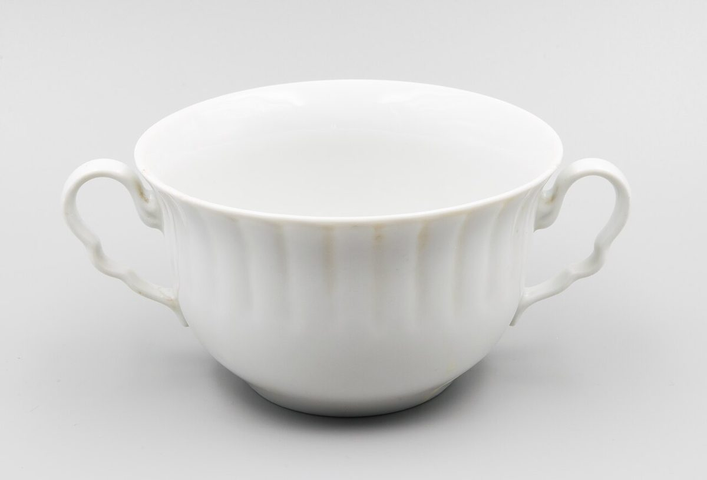
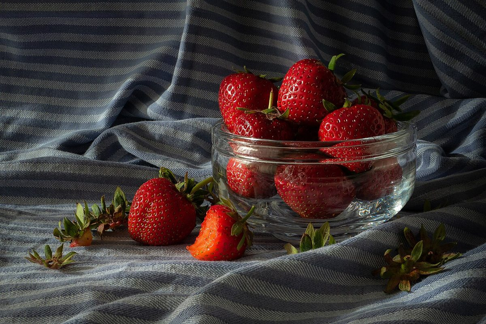

お店について
コンセプト
制作側の案ひと皿の、あとの空。
食事を終えて外に出たとき、ふと見上げた空がいつもより少しやわらかく見える。そんな何気ないひとときを思い浮かべて、このホームページのトーンを考えました。
これは制作側がページ制作のために考えた案です。店名の意味・由来や、お店の理念ではありません。実際のコンセプトは、お店からお伺いして差し替えます。
店舗情報
| 店名 | キッチンsora |
|---|---|
| 住所 | 京都府長岡京市馬場見場走り13-13 |
| 電話 | 090-4037-5784 |
| https://www.instagram.com/kitchinsora | |
| 営業時間 | 準備中(お問い合わせください) |
| 定休日 | 準備中(お問い合わせください) |
| 席数 | 準備中(お問い合わせください) |
| 駐車場 | 準備中(お問い合わせください) |
| 支払い方法 | 準備中(お問い合わせください) |
こだわり・スタッフ紹介
準備中(お問い合わせください)


ご不明な点はお問い合わせください
掲載している写真はフリー素材のイメージです。店舗の実際の様子・料理・外観とは異なります。日本国外や撮影地不明の写真を含みます。